Notes
Film Notes
These are my notes on every film I have watched since 2024.
They hold my devotion to cinema and my love for it, and whatever I found new each time I finished a film alone and thought it through. I have put it all into words — this is my treasure as a film lover.
-
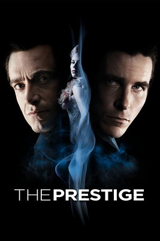
The Prestige · 2006
The mystery is measured exactly right — you only understand once it is over. The thriller in it fills the film with science fiction and a sense of the occult.
-
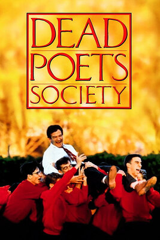
Dead Poets Society · 1989
The Captain is a ferryman, opening the door to a new world for you. A parent’s constraints are the devil, pulling you back out of the light and into the dark.
-
Catch Me If You Can · 2002
A con man’s brilliant life.
-
Love Letter · 1995
Falling, slowly and from inside a memory, for the person who once loved you.
-
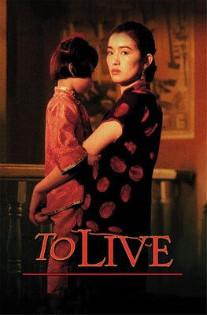
To Live · 1994
A modern history of China. Set against a great age, the people of a small one look so slight.
-
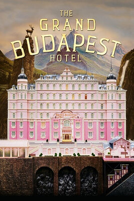
The Grand Budapest Hotel · 2014
A world like a fairy tale; colours like something said in sleep.
-
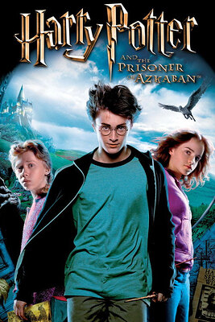
Harry Potter and the Prisoner of Azkaban · 2004
The turn from fairy tale toward darkness. The unbroken take through Hogwarts flows beautifully.
-
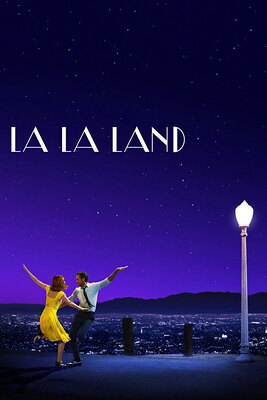
La La Land · 2016
A film that holds music, story and editing all at once. What stayed with me most is the opening, cut like a music video: introducing the two leads separately, each through their own point of view, felt new to me. “City of Stars” runs through the whole picture and stays with you afterwards. The seasons cut the film into five parts, each with its own palette, mood and meaning. Music is the subject, and around it the film argues about dreams, love and work. The story peaks in the honeymoon of summer. Again and again it sets dance to music to show how good love can be, and the dreamlike run back through time at the end is devastating. Narrative, cross-cut, parallel and musical montage are all used to hold the rhythm — the mix at the opening party especially. It made me feel that a good film rests not on effects but on shots and technique. It earns its place: the craft of folding this many elements into one film is in a class of its own.
-
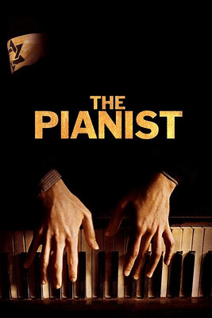
The Pianist · 2002
Crueller than losing your family is losing the place you came from.
-
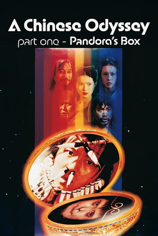
A Chinese Odyssey Part One: Pandora's Box · 1995
A very good period martial-arts film. There is a great deal of moving camera in it, and the blocking of the dialogue scenes is worth studying. Stephen Chow’s built-in comic presence, and the ending where Pandora’s Box carries him through time, are the high points — and his partnership with Ng Man-tat adds much of the comedy.
-
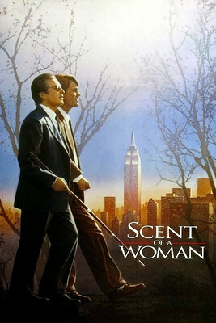
Scent of a Woman · 1992
Everyone has a reason to exist, principles of their own, and some hope worth living for.
-
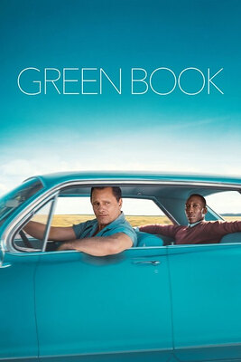
Green Book · 2018
Life’s green book is to do every single thing as well as you can, whatever comes of it.
-
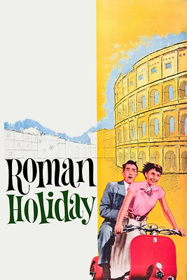
Roman Holiday · 1953
The truth of living is freedom, and romance.
-
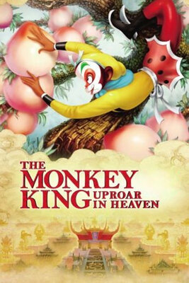
Havoc in Heaven · 1961
It made me miss kindergarten, when nothing weighed on me.
-
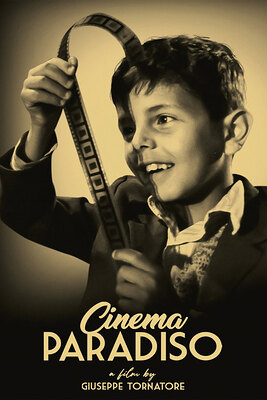
Cinema Paradiso · 1988
Those kisses, those tears — time has washed them until they are utterly clear.
-
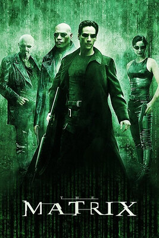
The Matrix · 1999
A visual feast.
-
The Lion King · 1994
“Remember — do not forget who you are.”
-
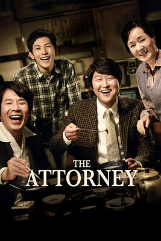
The Attorney · 2013
“The egg is alive. The rock is dead.”
-
Eat Drink Man Woman · 1994
Every family has its own scripture, and it is hard to recite.
-
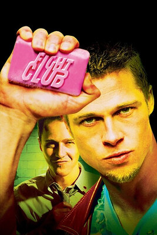
Fight Club · 1999
The film takes a very unusual point of view. The story moves from different temperaments to different personalities to different lives altogether. The lead’s mind seems disordered and unreal from beginning to end — only at the moment the bomb starts counting down does he see his real self, and the real world.
-
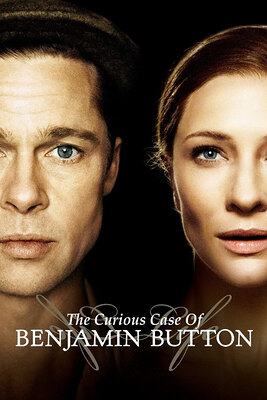
The Curious Case of Benjamin Button · 2008
Some things do not change, however long time washes over them.
-
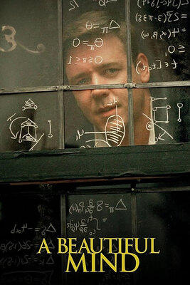
A Beautiful Mind · 2001
The story is coherent, fluid and tight, with nothing wasted. The film leans heavily on long lenses and crane moves to isolate its subject and his qualities, which suits what it set out to do. The score keeps you tense throughout.
-
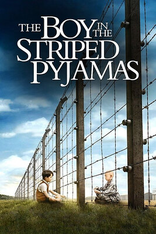
The Boy in the Striped Pyjamas · 2008
The dialogue scenes are lean, and the camera keeps changing through them. When Bruno crosses the woods on his expedition, the moving camera follows him from several angles and at several focal lengths — you feel you are there with him.
-
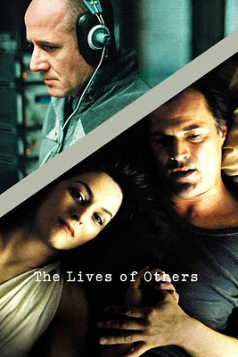
The Lives of Others · 2006
The narrative turns, and turns again, and the ending knows exactly what to dwell on and what to pass over. There is not much technique on display, but the tension in the arrests and the searches is done extremely well.
-
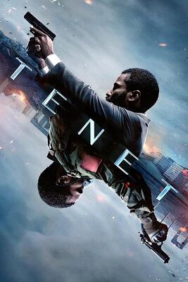
Tenet · 2020
The technique is rarely seen, and you cannot follow the plot in a single viewing. Nolan’s scores go without saying — vast and epic as ever. The way the dialogue scenes are shot is worth studying.
-
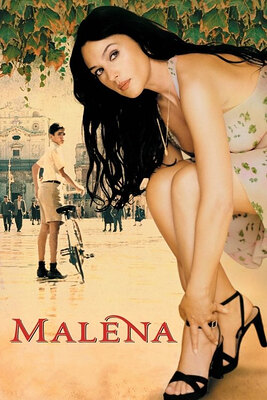
Malèna · 2000
The film uses a great many low, ground-level angles, and lets the environment carry the character. The moving shots taken head-on to the lead are very good, and the staging works superbly with the processions through the town.
-
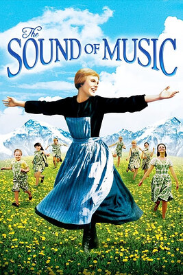
The Sound of Music · 1965
I love that the camera comes down out of the sky at the start and cranes back up into it at the end. Inside the church, the architecture and the costumes are classical and devotional, which gives the image a mystery. The night lighting is superb: the environment is built exactly right, and it carries a stillness with it. The low-light photography is a real success.
-
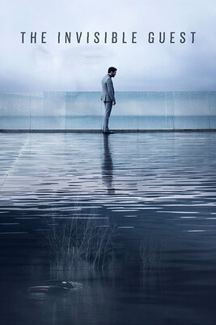
The Invisible Guest · 2016
I learned how to imply things with the camera, cutting between long, medium and close positions. Changing how much the frame takes in during a conversation can mark a shift in feeling or attitude, and can mark how much a particular line matters.
-
Avatar · 2009
After The Matrix, another epic that remade what a film could look like. The plot is well built, and the way the ending lifts its theme took me by surprise. Its argument is that we should protect the environment and treasure life on this planet, and that our fates are bound together. Beyond that, the shooting feels technological and stays coherent, especially the first-person tension of arriving on Pandora. The camera circles its subjects again and again to open up a location without letting the image go dull, and pulling the camera back to reveal a character’s surroundings looks wonderful to me. I did feel the film runs a little long, and the motion capture was not yet mature — though already very good. The fights are exciting, but not quite to my taste.
-
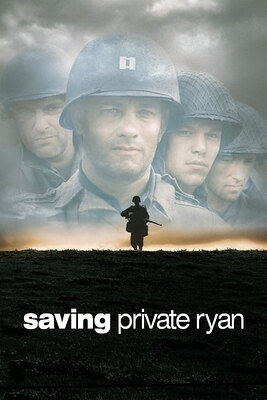
Saving Private Ryan · 1998
One of a kind among war films, and history will not produce another like it. Story, narration, sets and props are beyond reproach. There are a great many long lenses and a lot of structural composition. It favours over-the-shoulder shots from above and from below, with the camera at about thirty degrees to the actor, and the focal lengths look to be around 60–70mm. It often begins on a close-up and pulls back to reveal the whole scene — the use of the wide view has clearly been thought about carefully. The handheld work adds a particular kind of shake that matches the tension the film wants the audience to feel, and the camera repeatedly follows from behind a soldier and then moves round in front of him, which pulls you in. The long takes that open the film are executed at a very high level and drop the audience into the situation at once.
-
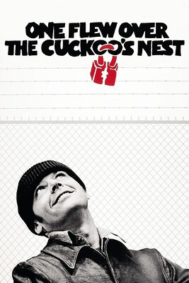
One Flew Over the Cuckoo's Nest · 1975
I did not really follow it the first time. Only after reading what others wrote did I understand that the shot on McMurphy’s forehead near the end implies surgery — his memory erased, his nature already gone. When the Chief smothers him, he is in fact freeing him from the world outside and giving him a physical freedom. The doctors reminding them daily to take their medication and holding group sessions looks like help, but is really a way of confining their minds. McMurphy’s arrival breaks that silent system: he starts teaching the “patients” basketball, building a casino, even making demands of the nurse. As for why the nurse stops him being discharged — perhaps it is her anger at a singular person breaking the rules. In short, the ward stands for the system, and the nurse for the people inside it. On camera language: several of the card-playing shots use the onlookers as foreground, which conveys how alive the room is. In a corridor with real depth you can shoot from fixed positions at either end, and when people are passing through, different focal lengths can carry that too. Some interiors are established on a long lens, which lets you leave out the secondary detail and keeps the image from going flat even when nothing is moving and there is little colour.
-
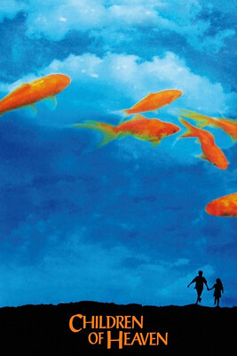
Children of Heaven · 1997
A short story, but a full one — moving, and with a child’s clarity. At the end the goldfish swim up around Ali’s feet, as if his sister has forgiven him at last. The running is shot first-person on a slightly wide lens; the head-on shots retreat before him on a long lens; the side views are slow motion, tracking across. The neighbourhood the boy lives in suits a long lens, which brings out its depth. I love the camera when the coach times Ali: it tracks sideways, fast, keeping pace with him, and stops only when the coach comes into frame holding the watch.
-
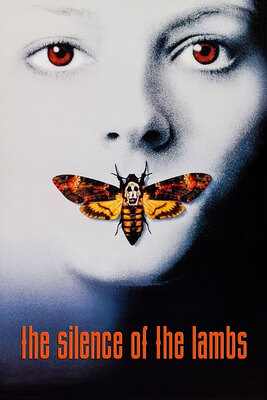
The Silence of the Lambs · 1991
I did not understand it the first time. Under two hours, the cutting rhythm feels a little compressed. The conversations between Clarice and Lecter are a model of how to study a film shot by shot. Lecter is built from every direction and through many other characters, and the way the ending hints at the theme is the finishing stroke. The low melody of the score and the leaping violin lay another layer of suspense over the whole thing. When the film takes a character’s subjective view it combines a head-on close-up with a first-person wide angle, to show the change in feeling and what is going on inside them. The flashbacks outside the main plot are cut cleanly too, always moving from a shot facing the character straight into first person, which speeds the rhythm up cheaply and well. The scene where Clarice searches the old garage — the set, the props, the lighting, the sound, the score — puts you inside her feelings immediately. Enclosed spaces are introduced with a circling camera and long-lens pans. Several arrangements of colour and cold light leave you oppressed and tense. The overall palette leans vivid while the exteriors are graded cool, and a push-in signals a subjective view and the information that matters. The actors’ movements and micro-expressions are at a very high level.
-
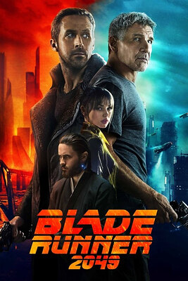
Blade Runner 2049 · 2017
I have not seen the first one, so parts of this were lost on me. This must be Villeneuve’s finest work as a master of light. Sets, lighting, effects and music are all taken as far as they will go. The exteriors mostly come with rain and heavy fog, which brings out the end-of-the-world feeling of that future. The interiors are lit with great precision: wide-angle shots from above, combined with moving light and shadow and a desert-toned grade, give a sense of mystery and of ritual. Enormous computing power renders the crowded city and the neon night markets of the future as pure science fiction. There is not much dialogue, and the shooting stays mostly with the lead, which expresses directly how cold and empty the world is. What moved me most is Villeneuve’s shallow focus: it shows the subject’s movement and expression while also implying and pushing the story forward. It was the first time I felt the appeal of what lies outside the focal plane, and the first time I recognised this way of watching — a kind of third-person looking-in.
-
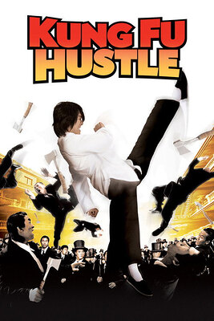
Kung Fu Hustle · 2004
The best martial-arts film I have seen. Its photography, editing, technique, music and intent completely make up for the slightly absurd characters the genre hands it; its depth has gone past what a traditional wuxia film is. The high points for me are the technique and the cutting rhythm. Even though the film uses the crane a great deal, every shot carries a full load of information — nothing is surplus. The fast cutting leaves the audience with almost too much to take in, and even someone like me, who is not interested in action, gets carried along. Although it is an action film its audience is very wide, with threads of every kind woven into the main line. From the long take at the opening to the montage of time at the end, Chow’s talent as a director is everywhere. For me the finishing stroke is the montage of imagery when Sing transforms — a cocoon becoming a butterfly — which shows the exact moment a character grows. The film is careful with its near-zero-angle wide shots from above, which introduce the space and give the frame tension at once, and I cannot help admiring the staging: nothing in it feels out of place. The lift at the very end brings tears.
-
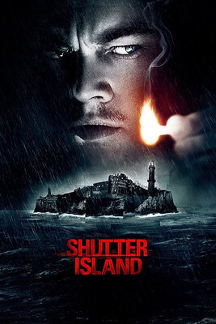
Shutter Island · 2010
A suspense film that works your head. It is a little puzzling the first time through. The story is very finely built, with almost no holes. Delusion is a subject that suits film, but few handle it well. Measured against A Beautiful Mind, Shutter Island turns more times and ends with more depth; it also carries some horror, and its casting lifts its standing further. On technique: the heavy rain at the opening and the shots inside the boat already set the film’s suspense. Once they reach the island, real work goes into rendering the place — the wire fence in the foreground and the moving car, approaching the buildings fast in first person, the iron gates opening one after another along the way, the guards standing watch — all of it builds tension. The film has a lot of plot but the rhythm never drags: there is a great deal of jump-cutting, and several continuous actions matched with sound effects, a technique that pushes the story faster. Shot-reverse-shot shows a thing or a person appearing suddenly in front of someone, and the feeling that follows. Shooting a conversation from below brings out the latent conflict between people.
-
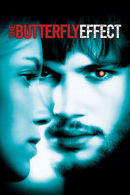
The Butterfly Effect · 2004
If you have ever felt you should not have been born, watch this film. A fine piece of storytelling with reasoning and suspense mixed in, and some horror as well. The lead lives out a different life in each parallel universe, and the palette changes with them: in the second ending, living with Kayleigh, the image is vivid and bright and highly saturated; in prison the grade goes cold and dim. Every memory sequence drops you into first person and holds your breath. Worth noting is the way the film connects its main line to another event or action happening at the same moment in the same space, moving to the new subject by camera movement or by following. The handling of the transitions is very natural. This is a film that cares about narrative logic above all.
-
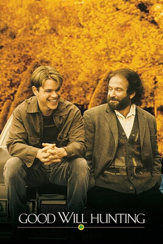
Good Will Hunting · 1997
A film with lines that stay with you, and a great deal beneath them. My reading of the ending is that Will finally understands what Sean has told him, makes peace with himself, and sets out to find what his life means. Sean is Will’s hunter of the mind; the professor plays the reconciling part. Will’s best friend is the catalyst that makes him think about work at all, and his time with Skylar shows his fragile side. The film opens by building Will and the professor through a few scenes, and although it is not long it draws its characters thoroughly. Its lines are, word for word, worth keeping, and every one offers the audience something. The technique is fairly conventional, but the film does work at the therapy conversations: when Sean and Will embrace, Will is shot from below and Sean roughly at eye level, which shows how much Will leans on him. A wonderful passage is Will’s flood of words as he turns down the intelligence agency, where a push-in leads the audience into the monologue.
-
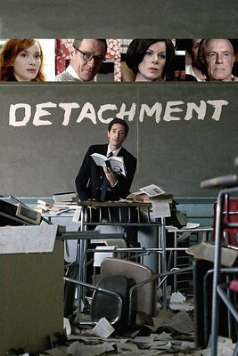
Detachment · 2011
The story is oppressive, especially the chaos of the school at the end — one man reading a poem alone, and the loneliness in that is the whole film in miniature. On first viewing it felt too obscure; the frame of the story seemed to have no logic to it, let alone technique. Too much implication and philosophy is compressed into under two hours, and it comes out rough. From the opening, the lead speaking to camera in dim light and the chalk drawings already put a weight on you; then the pitch-black night, the silent crying alone on the bus, the saturated walls and the flashbacks loaded with grain all deepen it. Still, I very much like the middle section, the time the lead spends with Erica and the bright, lovely music that goes with it — it puts some life and some hope into a dark film. The saturated scenes are in fact expressing the character’s own suppression, fear and collapse. The shooting feels low-budget: a lot of zooms, a lot of lost focus, and lighting that is a mess — I cannot tell whether that is deliberate. But the wide-angle head-on shots along the depth of the school corridors do have real atmosphere.
-
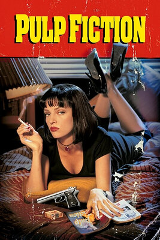
Pulp Fiction · 1994
A black comedy about gangsters. The director makes a 150-minute film out of three stories, each connected to the others. The score must be its greatest strength: the theme and the music over the transitions are all funny, and although the melody repeats it still makes you want to dance. Tarantino’s characteristic low angle carries both the comedy and a kind of awkwardness in the relationships, and the waist-height view — not something you see often — is used especially well here, showing the swagger and the strut of these gangsters completely. In the corridor the camera combines a fixed position with a pan-follow, which takes you from bystander to participant: a very fine effect. The palette is mostly warm and on the saturated side, which leaves you restless, and seems to hint at how unsettled that era was. The film seems to want to say that this absurd world is full of uncertainty, and that justice looks different to everyone. Pulp Fiction opened a door for me into a new world — novelistic cinema — and it was the first time I appreciated Tarantino’s aesthetics of violence.
-
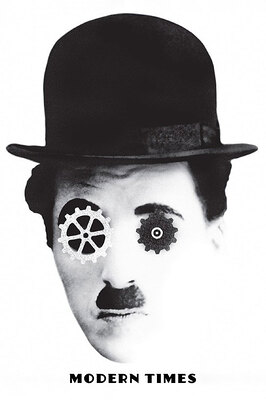
Modern Times · 1936
An old film from 1936. Black and white and silent, and yet the acting, the dramatic effect, the editing and the use of montage put it on level terms with any colour picture. Five stars, deserved. Chaplin’s fine performance and his humour not only bring the plight of America’s unemployed during the Depression vividly to life, but also mock, from the side, the holes in capitalism — its disregard for working conditions, its single-minded pursuit of efficiency and output. What refreshed me most is the imagined passage where Chaplin and the girl live together, which shows how much the two of them long for a decent life.
-
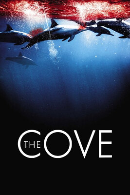
The Cove · 2009
The first documentary I ever watched, and one whose place in Douban’s top 250 carries real weight. It was the first time I learned what happens to dolphins at Taiji, and how severe their situation is becoming. The crew used hidden cameras, aerial shots, night vision and underwater equipment to show the killing, and used interviews and first-person footage to show what bystanders think and know, and the absurd indifference of the Japanese government. The film is structured out of sequence, opening with night-vision shots of the cove and with the point of view of Ric, who founded the organisation, and leading us deep into what is happening at Taiji — very much a record of fact. It made my hair stand on end and left me cold, and made me feel deeply that protecting the ocean is protecting ourselves.
-
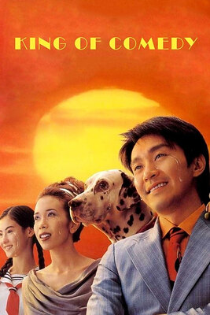
King of Comedy · 1999
The second Stephen Chow film I have seen that he both directed and starred in. I think it is better made than Kung Fu Hustle; the extra story lines make it richer. It feels as though it has captured much of what performers actually go through, and how they grow. There is a lot here I can learn from: how the narrative is laid out, how characters are brought on, how you shoot the connection between two people, transitions built around montage, the use of a MacGuffin. And lines worth savouring. In short, Chow’s films may be shot a little more simply, but the scripts are solid and the substance is rich — they lose nothing to a Hollywood picture, and that shows how far he will go to get a thing right.
-
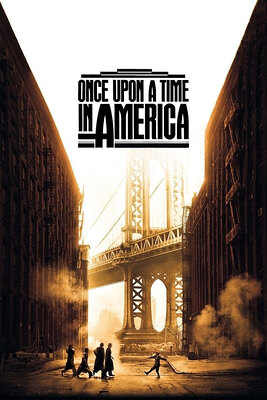
Once Upon a Time in America · 1984
A film that puts its weight on narrative. It opens out of sequence to introduce its characters and where they now stand, then uses a montage of time and a flashback to carry us back to Noodles’ childhood. It weaves narration through itself, switching between memory and the present, and it takes time to keep track of. The film stock also seems inconsistent: in the church the image switches suddenly to something antique, and the raised contrast and darkened exposure take some adjusting to. For 1984 the staging is fluid and considered — the camera’s shifts of position and of shot size imply the relationships and the standings between people, build atmosphere, and close the distance to the audience. Staging that smooth was very advanced for its moment. The film also likes to use close-ups to show the fear inside a character, and fixed positions to show the small changes in what they feel. Music runs through the whole thing alongside the narrative, a lilting, winding melody with a quiet sadness in it; when its rhythm goes from gentle to soaring, the feeling has been building to a peak.
-
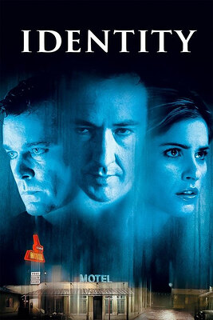
Identity · 2003
Among the many films about split personalities, Identity holds its place through its particular way of telling the story and the carefully built suspense and logic. Much of the horror along its main line comes from the locations, and from how the lighting and the sound work together: rain, thunder, lightning, a remote motel, unexpected guests, an accident on the road. The film is not long but draws several of its characters in detail, and its chapters keep their grip. You can see that the murder scenes deliberately imitate the famous sequence in Psycho. When a killing happens it always comes with terrible thunder and a scene in disarray, or an urgent shout; when the search begins, the film follows the characters and uses shot-reverse-shot to bring out their nerves and pull the audience’s feelings along. Then, once the feeling has built to the point where your heart is about to come out of your chest, the director uses a slow push on a medium shot and the environment to uncover the truth a step at a time. The film asks a certain amount of its audience. All told, four stars.
-
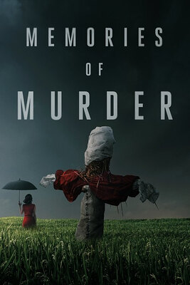
Memories of Murder · 2003
A crime film that works your head. On first viewing it is confusing, but the ending seems clear enough: the young man Park Hyun-kyu is the serial killer, and he has come back to the town to go on. Detective Park’s eyes never do see through him, and by the end of the investigation even the most level-headed of them, Detective Seo, has completely lost his temper. Memories of Murder is a model of the crime-suspense film: from raising the case, to analysing it, to the misunderstandings in the middle, to the officers’ feelings breaking loose once it has stalled, and the accidents that keep happening. Bong Joon-ho’s narration is close to perfect, and he builds his characters through it, which makes them fuller. He likes to tell a story with a fixed camera, and he handles his actors’ movement very well, using the camera to show where a person stands, what power they hold and what they feel. The rhythm goes from slow to fast and then passes through music into the final act and the coda, and the use of location adds to the story throughout. From The Crucible and Hope to Memories of Murder, Korean cinema likes to put a train into a film and tie it to the plot — practically a local speciality.
-
Paprika · 2006
I did not understand it the first time; having finished it, all I can do is marvel. It was the first time I had seen science fiction shot as animation. The image does not draw you in the way 3D animation does, but Satoshi Kon’s handling of flat images gives up nothing to three-dimensional space. The film brings in dreams — a concept even now we cannot explain — and warns us to use technology sensibly. I did not quite follow how Detective Konakawa reads the film, and I hope a second viewing will fix that. The science fiction in it is not that heavy, and yet through reality and dream the director gives the audience a visual feast. The theme appears at both the start and the end, and its melody sounds fogged and far away, exactly like being inside a dream — it is the finishing stroke. On sound and image: when a character is in danger the film does not cut away but first pushes in or goes to a close-up, bringing out the face. Paprika created a style of its own, giving the audience a dream in a form nobody had used before — by the end even I felt the world in front of me starting to come loose from the real.
-
Flirting Scholar · 1993
Personally the hardest of these to judge. People say there is always something deeper in Chow’s films, but with this one, on a first viewing, I did not find any great truth in it — perhaps because he did not direct it. There is nothing especially new in the content; at most the scene at the end where he wins Qiuxiang is a little fresher. The plot is still worth praising, and I came to like the way Wah On is set up. Beyond that, in the last fight between Wah On and the Scholar of Death, Wah On is brought on first through opera and then handed over to the Tang family spear — that way of introducing a character is striking. I have tried several times to watch this film and could not get through it; perhaps it felt too excruciating, or too crude. Nothing much stayed with me afterwards, only a few of the fights, which were genuinely rousing. I hope my score goes up when I watch it a second time. For now, two stars — the film seems to run almost entirely on performance and on faces.
-
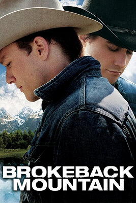
Brokeback Mountain · 2005
Ang Lee is good at using the language of the camera, and the logic of a strong script, to show fine-grained feeling and relationships that keep turning; Brokeback Mountain shows it completely. The mountain is where people put their feelings and their quiet. Everyone has a Brokeback Mountain inside them, keeping the noise and the confusion out — somewhere of their own to be.
-
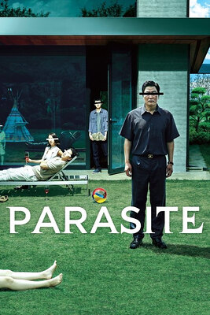
Parasite · 2019
Another masterpiece from Bong Joon-ho: a film that reflects the enormous gap between rich and poor in Korea. It uses metaphor and staging to show, vividly and concretely, the division of wealth and the contradiction between rich and poor that cannot be bridged. In terms of content, the solid script already lays a good foundation, and the director handles the transitions and turns of the plot especially well; the ending flows cleanly too. He uses the rise and fall of the music to carry the rise and fall of feeling, and to show what shifts inside the characters. Slow motion and lateral movement are still his stock in trade and mark his personal style. The lighting is very well handled: warm and cool tones express elation and suppression, and the contrast of light and dark brings out the division of class. All told, Parasite is a film with a style of its own that reflects the unequal structure of contemporary Korean society. From its release in 2019 to when I watched it, it had climbed into the top 150 — and it deserves it.
-
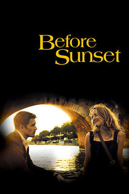
Before Sunset · 2004
The second of the talking trilogy. It is shorter than the first, but with Before Sunrise laid down beneath it, this one feels more mature and holds more philosophy. The two of them have not changed; only their age and the years have. They still meet as they did, talking and laughing, easy and unconstrained. They tell each other the nine years of hardship and journey they have each had, and together they feel how the years have worn down the edges of their pursuit of romance. But their warmth toward each other has not changed. As the sea takes in rivers, they are each other’s harbour, the port where the ship unloads, the point where two minds cross.
-
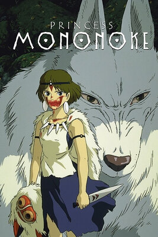
Princess Mononoke · 1997
People must always keep some awe of the natural world. Miyazaki’s fairy tales carry deep philosophy in them, and awe of nature has always been a basic condition of our surviving. Through the world of a fairy tale he warns us to hold nature and life in awe, and to protect the home we share — an epic about saving humanity, with a trace of the tragic in it and yet romantic too. San’s goodness moved me, and Ashitaka’s individual heroism shook me.
-
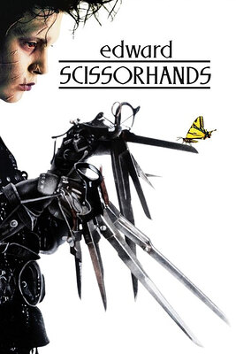
Edward Scissorhands · 1990
Edward returns to the house on the hill in the end — perhaps he never belonged among people at all. And yet love broke through the boundary between souls. Ever since he came down from the mountain it has snowed, and she can still see herself dancing. Perhaps that snow falls for her. Perhaps it is Edward’s tears, missing her.
-
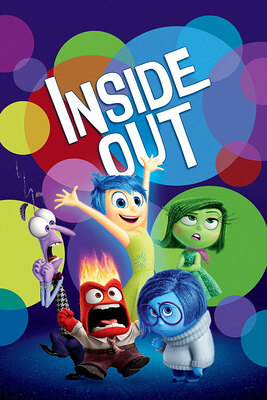
Inside Out · 2015
Although I am no longer a child watching it, I could feel the shadow of childhood clearly. Disney’s fairy tales are always beautiful, and their films suit people everywhere. Inside Out uses cartoon animation to tell of the change, the growth and the transformation of a girl’s inner world — from everything being fine at the start, to the family moving to San Francisco, where the story turns. A good film does not need a gorgeous surface; it needs a story that can genuinely reach people. If I could turn time back, I would go to the year this film came out, and walk into the cinema holding my mother’s hand again.
-
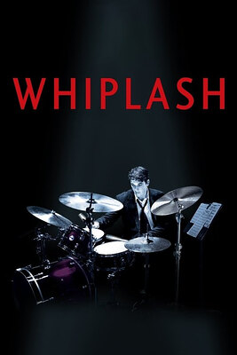
Whiplash · 2014
The first film I watched after a long time away — nearly two years without one before I came back to that world. Short video keeps accelerating, but for anyone who loves film these classics on the Douban list are always worth taking slowly. This one reaches a new height in its use of music: many images have the music of the next scene entering before the cut, and that background sound turns out to be what the lead, or the rehearsal room, is playing in the scene we arrive at. The lighting design brings out the lead’s inner world and magnifies what he feels; each time he plays, the focus of the spotlights is like a monologue from inside him. Many of the shots bring out his obsession with drumming, and his mania. Together they turn the film into a real drummer’s autobiography.
-
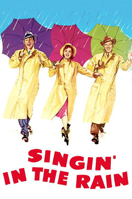
Singin' in the Rain · 1952
A combination of the silent film and the talkie, and for me that combination is its greatest strength: it brings out the performance of silent cinema — the vivid action and expression — and also the immersion of sound film. Putting film inside film is where this one is inspired. Some things in it are very much its own: the way the lead tells a story, and his partner, who stays the second man throughout while his comic effect cannot be ignored. The declaration scene is romantic, and I think the director’s idea there is a good one, making full use of everything a film set can offer.
-
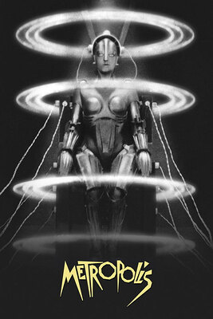
Metropolis · 1927Class notes
A clock with only ten numbers marks capitalism’s exploitation of ordinary people. A dystopian work. Shows the difference between social classes and the sharpening of their contradiction. Visual impact: extravagant sets. Dystopian in type, but utopian in its ending. Dystopia: anti-totalitarian, presenting a world of catastrophe, wealth divided severely. Maria the robot breaks anthropocentrism. A representative of the posthuman. Surrealism and the decentring of the human. The process by which the robot Maria evolves does not directly show a fusion of the human and the inorganic, and does not entirely fit the transformation from human to cyborg. Maria as a figure: the Madonna; a figure capable of inciting. The anxiety that modern technology and the urban woman bring to the bourgeoisie. The rise of women’s position. The process of modernity. Stereotyped images of women. Instrumentalised. Cyberpunk: high tech, low life. The catacombs: a benighted Middle Ages. The underground city as the buried past, pointing to the shackles of darkness. German Expressionism: building particular sets that fold expressionism into art. Its features: highly symbolic, artistic, surreal, dark in mood; stories full of horror and crime; unusual visual design; instrumentalisation — the workers driven, for instance.
-
Grizzly Man · 2005Class notes
In Grizzly Man the subject stands in an idealist’s friendship with the bears. In his own footage he calls out again and again the names he has given them, as though they could understand. He tells the grizzlies he loves them — an intimate form of address that seems to say they are under his protection, though in fact they are not. Inside the reserve he observes them at close range: males fighting over a mate, feeding seen from very close, touching their droppings with his hands. This open but bystander’s position shows a concern for the bears beyond what a human should have, because the official safe distance is at least ninety metres and what the camera records is often far less than that. I cannot understand his conversations with the bears, because they are not on one level: human and grizzly share no language at all, let alone names for each animal on screen. If he were simply too lonely he had every reason to go out into the world; that he stayed shows his resolve to protect them. He casts himself as a grizzly and wants to shed his own human attributes, imitating their calls — which shows that his near-madness is in fact a symptom.
His attitude to nature is one of awe, but ignorant awe. First the bears: he loves them, and protects them without hesitating, and being close to them can be read as love of nature. But pitching a tent inside the reserve, however small the impact, is an interference — a human presence in the place they live means disturbing their lives, and indirectly affecting nature, which he plainly has not thought about. That is the ignorance inside his fanatical love.
His fate is wretched: he and his girlfriend were eaten until nothing whole was left. But it was determined, because the grizzlies never held the slightest thought of protecting humans and could not understand what humans wanted to protect them from. Nature does not have us in view. Human thinking is still too idealised, assuming the bears can read our will to protect them, when they care only whether there is food, not who is concerned about their habitat.
I agree with how others judge him. First the Alaskan wardens: they set up the reserve precisely to protect the bears, to provide a space for them to live in. If they think he broke the rules, they are right — who could imagine a person in this world loving grizzlies so much that he saw himself as one of them.
His former girlfriend grieves deeply over his death. She admires him, because his original intention — to protect the bears and to live among them — is worth admiring. I can understand that too, because everyone has a sacred task of their own.
Treadwell’s closeness to the animals put distance between him and other people, and perhaps between him and being human. The author does not understand what he did, and thinks it futile, because the bears do not understand human feeling. Treadwell treated the reserve as his own Eden and was hostile toward the human world and toward every other form of protection for the bears; he crossed the line between human and nature.
New German Cinema. Herzog has always held to exploring the relation between nature and people, and to showing how a person faces wildness inside nature. The ballad at the end is in a Western style, with something of nature’s sanctity in it.
Some hold that the environment is worth protecting, that its wildness should be protected and not damaged by human civilisation. Others hold that the environment should keep what is original in it. The American rich treat nature as a place of consumption, often arriving with great quantities of supplies and with servants. Herzog’s understanding of nature in Grizzly Man carries German philosophy in it.
Treadwell chose the role of director of his own life: he gave up the life he had before, decided to change his name and begin again. In the human world he was a failed actor; in the animal world, a star. The director does not plant Treadwell’s end as the film’s core; he states it at the very beginning. He does not play the recording to the audience directly, but shows his own response to hearing it and the changes in his face — a reaction to a reaction. Treadwell’s former girlfriend does not listen to the recording either; she responds to Herzog’s response to it.
American direct cinema has something in common with Bazin’s French film theory and with cinéma vérité. Direct cinema attends to the negligible changes in a scene — only the shot, without any sound. Direct cinema has to be understood from an objective position; cinéma vérité needs to show a complete truth, while direct cinema is a truth of the surface.
-
Blade Runner · 1982Class notes
Light and shadow. The lighting is one of the film’s greatest strengths. In the images of the future city the light is mostly cold; in the Tyrell building, warm colours dominate the background. In the meeting with the head of the corporation the director uses rim light to make a cold, killing atmosphere, and Rembrandt lighting to bring out the detail of the face. The rippling effect the light makes on the wall stays with you — there must have been a coated filter in front of the lamp to produce that beautiful, mysterious, uncanny air. In Deckard’s apartment the lighting is dense, and the light on his face, coming through something like a prison window or a blind, creates a cutting effect that feels sinister and frightening, and speaks to his character. When Deckard investigates J. F. Sebastian’s home, the sources are placed in the far ground, which conveys how unsafe the surroundings are and the sense of danger buried all around.
Colour: mostly cold, which conveys the strangeness of the world and its cold, empty air — people are distant from one another, or the place is dangerous.
Setting: mostly night. Rainy nights, the road surface reflecting the neon of the street. Very futuristic, and a real urban aesthetic.
Camera movement: Deckard’s pursuit of the dancer is thrilling. In the street chase, the director uses the density of extras walking the street to convey the pursuit as Deckard searches for the fleeing performer in a sea of people.
Catastrophic narrative: the director describes a world in desperate straits, where a very few hold the great majority of resources. The futurity is carried by the replicants and by the cyberpunk look of the streets. Humans have developed tools more efficient than themselves and set them to work. The world is no longer fit to live in, so colonising other planets has become the norm — which says that humans have mined the Earth’s resources to exhaustion.
In common with Metropolis: both films are dystopian. Metropolis ends by describing the division between capital and the common class, showing the evil of capitalism and how easily people are incited. Blade Runner presents the Tyrell Corporation controlling genetic construction to manufacture replicants and monopolise the right to develop resources — that is totalitarianism. Blade Runner depicts a world whose resources are exhausted: catastrophic. Also worth noting is that Blade Runner’s highly imaginative architecture and vehicles, the spinners for instance, resemble the skyscrapers built in Metropolis.
The Madonna and the cyborg robot in Metropolis have something in common with the replicant Rachael in Blade Runner: both are created by humans through advanced technology, both serve people, both are tools for achieving some purpose. Both films are cyberpunk, and both used the most advanced photographic technology of their time — Metropolis shot with miniatures, Blade Runner rendering and using blue screen to the greatest extent it could. Both imagine the model of the future city and its vehicles fully. The characters in both are highly symbolic. Blade Runner has more of the artistic about it, in image, in lighting and grading, and in effects. Both films contain elements of horror and menace.
-
How to Train Your Dragon · 2010
Far too moving — several times I wanted to cry and held it in. How to Train Your Dragon is a deeply affecting animated film. Hiccup goes from being told by his father that he has no such son to becoming the Vikings’ hero. There are a few places that bring tears. The first is Hiccup taming Toothless: they become friends and soar along a beautiful skyline. The second is when Toothless and Hiccup save the Vikings and Toothless’s wing burns in the fight with the great dragon; as Hiccup loses control and falls, Toothless shields him with his body and saves his life. And when Hiccup finally wakes and finds he has lost a leg, thinking his life is over, a brand-new prosthetic built to steer Toothless is set in front of him. The interesting thing is that Toothless and Hiccup are hurt on the same side — the left leg, the left wing — and what they share is that among their own kind they both seem fragile and out of place. But when the two of them work together, their strength cannot be stopped.
-
A Man Called Ove · 2015
This film really does bring tears. It moves from not understanding Ove at the start — thinking him stubborn, prejudiced against everyone in his neighbourhood, sick of every part of life — to coming slowly to know his wife in the middle section, and then his background and his father, at which point you find Ove is no misanthrope at all: he simply holds to what he believes. His father and he both lost their wives first. His father was a quiet man who knew cars and loved them, and worked at the railway station; Ove grew up under his influence, worked with him there, and loved cars in the same way. But he is sincere, kind, with a sense of justice, and wants to do better. Then an accident took from Ove — who should have had a happy ending — the father he had depended on all his life, and a fire burned down his home. A hurried night on a train is how he met his wife, and her persistence moved him deeply. But another accident took the life of the child who should have been born into that happy family, and his wife was disabled by the crash and ran into difficulties in her work as well.
-
In the Mood for Love · 2000
Once again I marvel at Wong Kar-wai’s gift — telling a story this superb inside a space this narrow, through every last detail. First, the sets give a cramped space a real refinement, and the conversations between Tony Leung and Maggie Cheung are carried by the movement of the camera. Maggie Cheung does not, in the end, leave her husband, and when Tony Leung goes back to find her and fails, he chooses to tell the secret to a ruined wall — and in the end that hollow puts out a green shoot. Nobody else knows this story; it is buried forever in the Hong Kong of the 1960s. Every meeting between the two of them happens in pouring rain and on staircases, which seems to foretell the turns and the mistiming of this love.